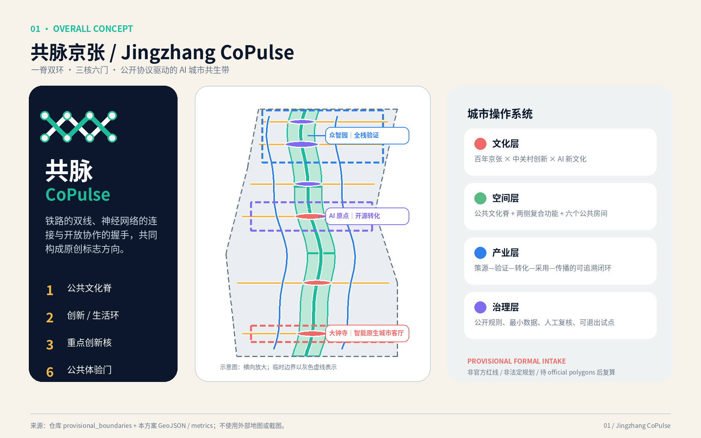
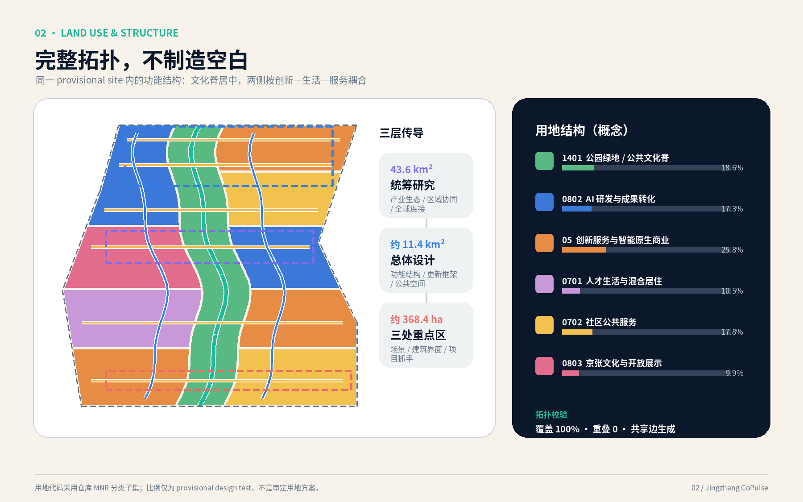
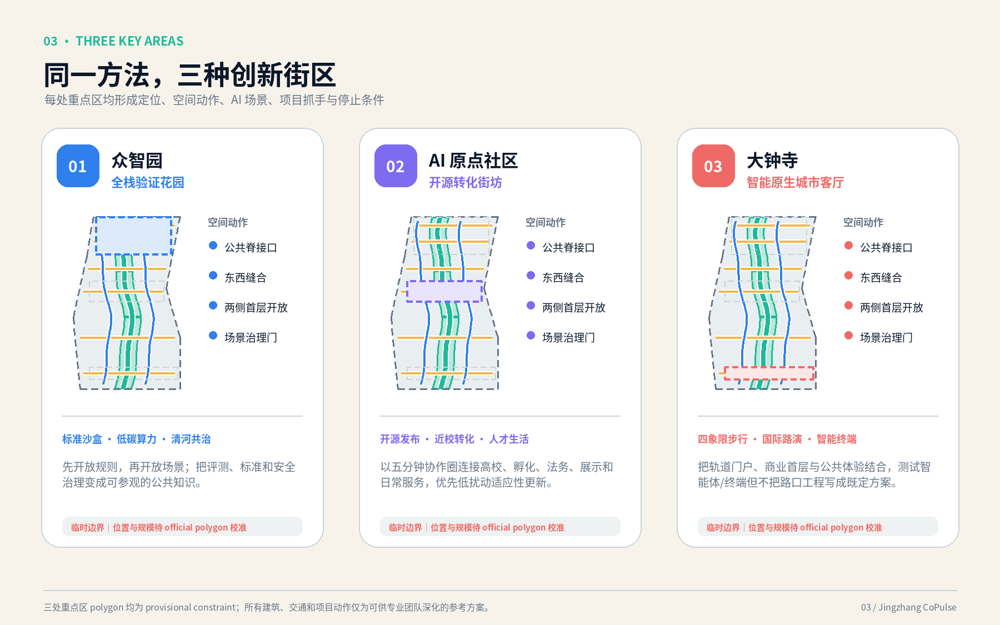
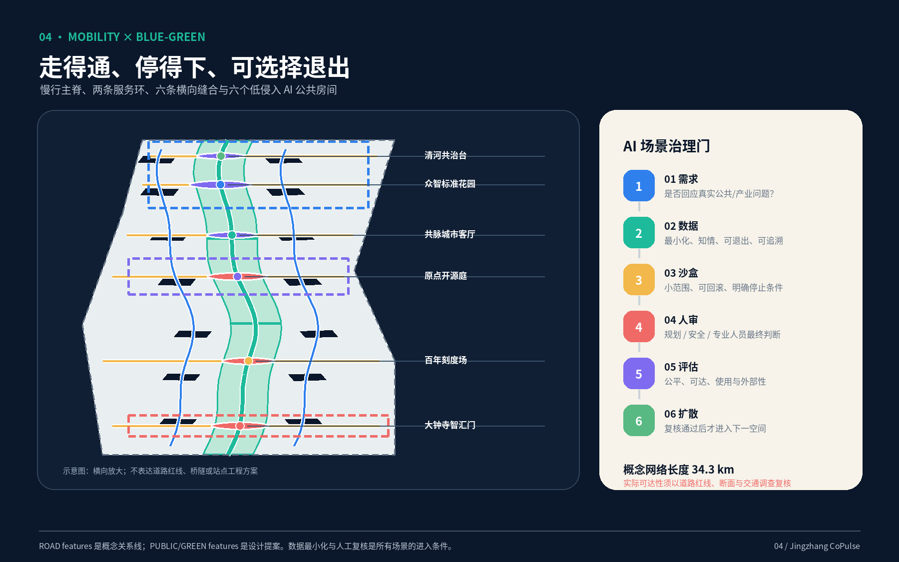
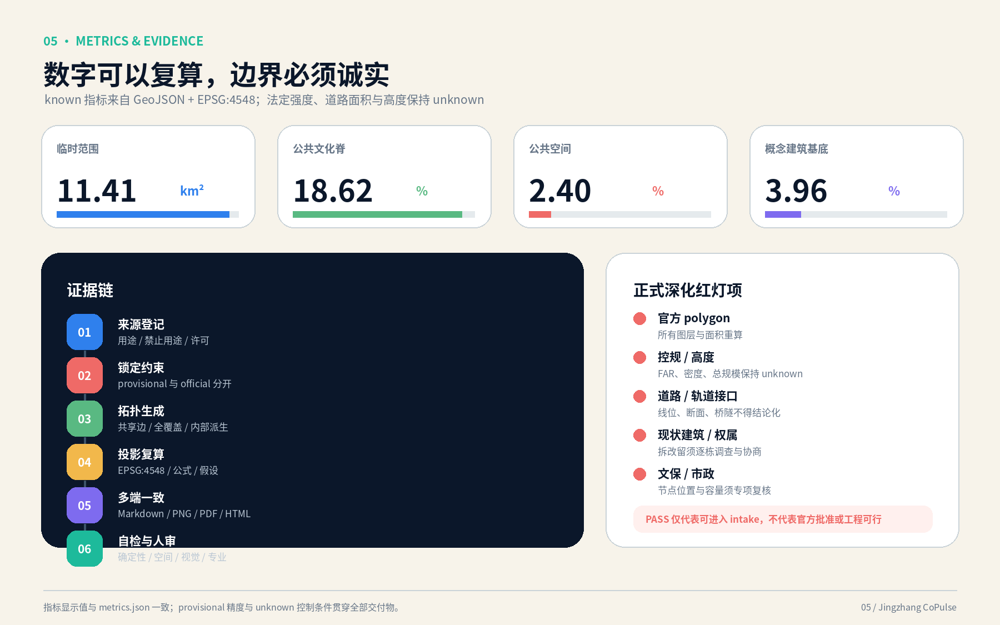

开源发布厅
原点社区贡献展示、成果发布、人工审核
把百年铁路的连接精神转译为一套可漫游、可验证、可共治的 AI 城市操作系统：一条公共文化脊、两条服务环、三处创新核与六个公共体验门。
PROVISIONAL FORMAL INTAKE｜非官方红线灰色虚线为仓库临时粗略边界；高对比内容为本方案的设计意图。图面横向放大，不作测绘、红线或工程放线使用。

组织 AI 生态、区域协同与未来城市机制；公告文字与约面积可作为任务依据，精确 polygon 尚缺。
以 provisional site 生成用地、建筑 test-fit、慢行、蓝绿、公共空间和分期证据链。
众智园、AI 原点社区、大钟寺分别形成可供专业团队深化的参考方案。
六类概念用地由同一 site polygon 拓扑切分；法定用途仍需 official 控规确认。


一条南北公共文化脊、两条纵向服务环与六条横向缝合只表达关系；道路红线、断面、桥隧、轨道接口和停车工程必须另行复核。

| 层级 | 本方案表达 | 正式深化前置 |
|---|---|---|
| 建筑基底 | 14 个可逆原型 test-fit，用于检验公共脊两侧的空间容量 | 现状轮廓、层数、质量、用途与权属 |
| 拆改留 | “保留—适应性更新—可逆增补—最后论证替换”的决策树 | 逐栋价值、文保、结构与利益相关方协商 |
| 高度体量 | 沿脊开放首层、分段体量和可共享屋顶原则 | 官方高度、控规、消防、景观与航空条件 |
所有场景经过“需求—数据—沙盒—人审—评估—扩散”六道治理门。未经清权个人数据、无法退出或无法人工复核的场景不得进入空间试点。
贡献展示、成果发布、人工审核
隔离测试、红队评测、停止条件
低速、预约、物理隔离、人工接管
聚合客流、无障碍巡查、人工复核
最小数据、按需计算、能耗披露
智能体/终端展示与国际路演
史料溯源、无肖像滥用、可退出
仅导航，不诊断；转人工服务
公开资源检索，不作升学决策
信息分流，不替代律师意见
预案推演、容量提示、人类指挥
报修聚合、可解释派单、人员复核
先做导视、发布、预约、评估与公众反馈，不先做永久工程。
在标准、安全、文保和交通专项通过后深化验证花园与慢行断点。
根据前两阶段的公共价值与外部性证据再讨论空间更新和长期运营。
中文/英文名、Logo 方向、三大定位、五大功能、三区两翼。
6 个全球案例、12 张场景卡、6 类用户画像、4 个验证场景。
4 个朝圣/荣誉节点、组件库、百年京张—中关村—AI 三幕叙事。
年度节律、开发者社区、场景开放、公众路线、国际传播和转化闭环。

边界声明：本页面不是政府或官方征集通道的成果，不构成规划审批、工程可行性、投资、土地权属或实施承诺。PASS 只表示具备仓库 intake 的机器检查基础。
范围文字、约面积、任务与成果深度
品牌、场景、地标、文化与运营
城市设计、控规边界与用地分类
仅用于生成、可视化与 intake 自检
| 缺口 | 当前处理 | 替换/复核动作 |
|---|---|---|
| official boundary / key areas | 保留 provisional 标签，不作精确面积和红线结论 | 替换后重跑全部 GeoJSON、metrics、PNG、PDF、HTML |
| 控规 / 建筑 / 权属 | FAR、高度、密度、总规模为 unknown；test-fit 不等于拆建 | 接入 official controls 与逐栋调查后重做 |
| 道路 / 文保 / 市政 | 仅表达概念关系与可逆组件 | 交通、文物、园林、市政、消防专项复核 |
| 个人数据 | 最小化、聚合、知情、可退出、人工复核 | 场景级数据保护影响评估与公众参与 |